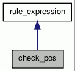

check_pos Class Reference
match pos against regexp More...
#include <dep_rules.h>
Inheritance diagram for check_pos:

Collaboration diagram for check_pos:

Public Member Functions | |
| check_pos (const std::string &, const std::string &) | |
| bool | eval (dep_tree::iterator) const |
| eval whether a single node matches a condition only called from check if needed. | |
Detailed Description
match pos against regexp
Constructor & Destructor Documentation
| check_pos::check_pos | ( | const std::string & | , | |
| const std::string & | ||||
| ) |
Member Function Documentation
| bool check_pos::eval | ( | dep_tree::iterator | n | ) | const [virtual] |
eval whether a single node matches a condition only called from check if needed.
The abstract class version should never be reached.
Reimplemented from rule_expression.
References rule_expression::match(), rule_expression::node, and TRACE.
The documentation for this class was generated from the following files: